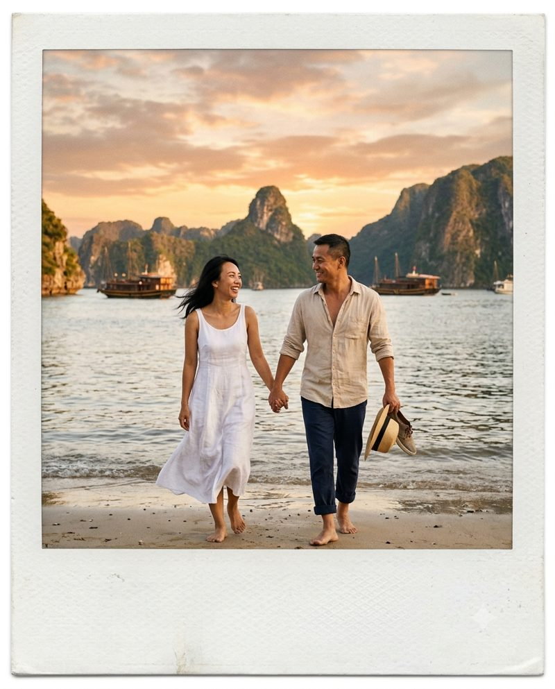
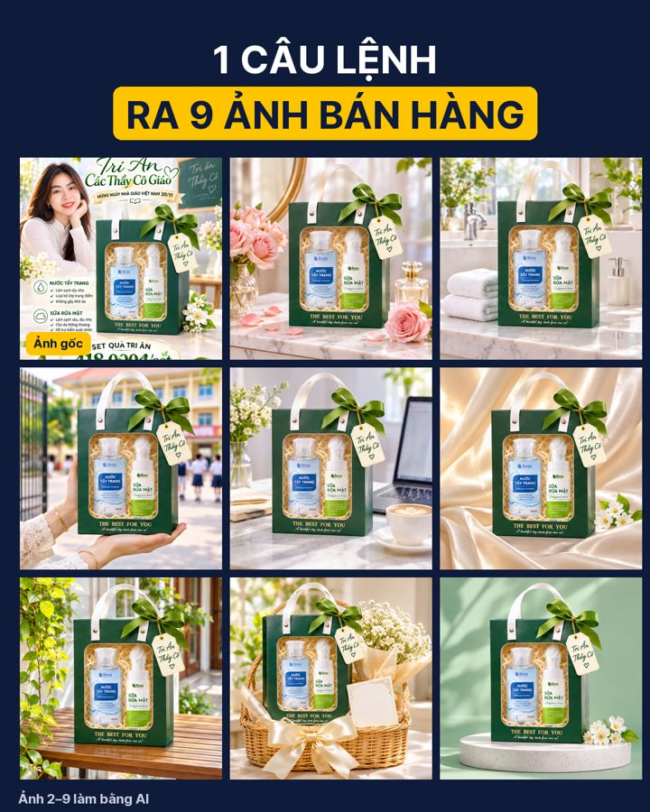
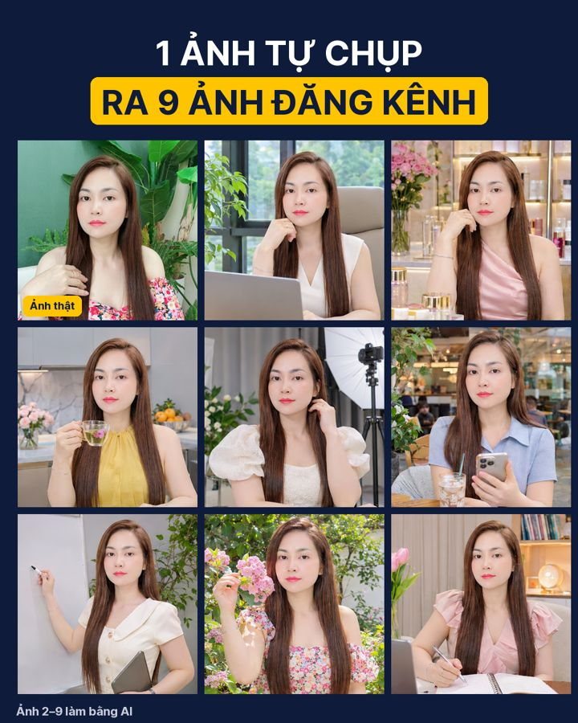

Đây là câu lệnh thật của các ảnh trên trang Xây Kênh Bằng AI: 4 ảnh bài ghim và các bộ ảnh trong bài đăng. Mỗi mẫu vài phút, làm ngay trên điện thoại bằng Gemini hoặc ChatGPT bản miễn phí.
Cách dùng
Bấm Sao chép câu lệnh dưới tấm ảnh bạn thích.
Mở Gemini (hoặc ChatGPT), dán câu lệnh vào ô chat.
Tạo ảnh chân dung khổ dọc 4:5, chân thực như chụp máy ảnh: một người phụ nữ Việt Nam khoảng 38 tuổi, xinh đẹp, tóc dài xoăn nhẹ, mặc áo dài trắng truyền thống, tay ôm bó hoa hồng và cúc nhiều màu, đứng trên sân trường rợp cây xanh, phía sau là cổng trường có băng rôn chào mừng ngày Nhà giáo Việt Nam 20/11 và học sinh mặc đồng phục đi lại phía xa. Nắng sớm dịu, phông nền mờ nhẹ. Gương mặt tươi tắn, nụ cười tự nhiên.
Muốn dùng mặt mình: bấm dấu + gửi kèm 1 ảnh rõ mặt, thêm câu "giữ đúng gương mặt người trong ảnh tôi gửi".
2Ảnh chân dung nền đỏ
Ảnh làm bằng AI
Tạo ảnh chân dung studio khổ dọc 4:5, chân thực như chụp máy ảnh chuyên nghiệp: một người phụ nữ Việt Nam khoảng 42 tuổi, tóc ngắn ngang vai, mặc sơ mi lụa trắng, đeo dây chuyền mảnh, đứng thẳng, cười tươi nhìn vào máy ảnh. Nền đỏ đô trơn, ánh sáng studio mềm chiếu từ phía trước hơi lệch một bên. Da tự nhiên, sắc nét, sang trọng, tự tin như ảnh hồ sơ doanh nhân. Không có chữ trên ảnh.
Hợp làm ảnh đại diện trang cá nhân. Gửi kèm ảnh của bạn và thêm "giữ đúng gương mặt" để ra ảnh của chính mình.
Trang cửa hàng, doanh nghiệp
3Ảnh quảng cáo sản phẩm
Ảnh làm bằng AI
Tạo ảnh quảng cáo sản phẩm cao cấp, khổ dọc 4:5, tươi sáng: một chai serum dưỡng da bằng thuỷ tinh trong suốt chứa serum màu vàng mật ong óng ánh, nắp vàng kim bóng, không có chữ hay logo, đặt trên bệ đá cẩm thạch trắng vân vàng. Nền sáng màu kem và vàng champagne nhạt, nắng vàng ấm buổi sáng chiếu xiên tạo vệt sáng lấp lánh trên chai, vài giọt serum long lanh, vài bông lan trắng và lá xanh nhỏ, bóng đổ mềm. Sang trọng, sạch sẽ, sắc nét, chân thực như ảnh quảng cáo thương hiệu mỹ phẩm.
Có ảnh sản phẩm thật của mình: gửi kèm ảnh, đổi câu đầu thành "Từ ảnh sản phẩm tôi gửi, giữ nguyên hình dáng và nhãn của sản phẩm, đặt vào bối cảnh sau:".
4Ảnh quảng cáo du lịch

Ảnh làm bằng AI
Tạo ảnh kiểu ảnh Polaroid khổ dọc 4:5, có viền giấy trắng xung quanh: một cặp vợ chồng Việt Nam khoảng 40 tuổi nắm tay nhau đi chân trần trên bãi cát, vợ mặc váy trắng dài cười tươi, chồng mặc sơ mi lanh màu be, tay cầm mũ cói. Phía sau là vịnh Hạ Long lúc hoàng hôn, núi đá vôi nhấp nhô, vài chiếc thuyền gỗ trên mặt nước, bầu trời cam hồng ấm. Màu ảnh hơi ngả phim cũ, cảm giác hạnh phúc, thư thái, chân thực.
Đổi "vịnh Hạ Long" thành nơi bạn kinh doanh: homestay, quán cà phê, khu nghỉ dưỡng…
Từ các bài đăng · 1 ảnh ra 9 ảnh
51 ảnh sản phẩm ra 8 ảnh quảng cáo

Ảnh 1 là ảnh gốc · ảnh 2–9 làm bằng AI
Dùng ChatGPT: bấm dấu + gửi kèm 1 ảnh sản phẩm của bạn, rồi dán câu lệnh.
Từ đúng sản phẩm trong ảnh này (giữ nguyên bao bì, nhãn, màu sắc, không đổi chữ trên bao bì), hãy tạo 1 ảnh ghép dạng lưới 2 hàng x 4 cột gồm 8 ảnh vuông quảng cáo sản phẩm ở 8 bối cảnh khác nhau, cách nhau bằng viền trắng mảnh: 1) bàn trang điểm đá cẩm thạch trắng có hoa hồng, 2) bệ rửa mặt phòng tắm sáng sủa có khăn bông, 3) tay người phụ nữ cầm sản phẩm trước cổng trường, 4) bàn làm việc có laptop và cốc cà phê, 5) nền vải lụa màu kem với nắng sớm, 6) hiên nhà có cây xanh, 7) giỏ quà có nơ và thiệp, 8) nền studio xanh pastel bóng đổ mềm. Ảnh sáng tươi, sang trọng, chân thực như ảnh chụp quảng cáo, không thêm chữ nào khác.
Đổi 8 bối cảnh cho hợp sản phẩm của bạn: đồ ăn thì bàn bếp, đồ thời trang thì phố đi bộ…
61 ảnh tự chụp ra 8 ảnh đăng kênh

Ảnh 1 là ảnh thật · ảnh 2–9 làm bằng AI
Dùng ChatGPT: bấm dấu + gửi kèm 1 ảnh rõ mặt của chính bạn, rồi dán câu lệnh.
Đây là ảnh của chính tôi. Hãy giữ nguyên gương mặt, kiểu tóc và vóc dáng của tôi, tạo 1 ảnh ghép dạng lưới 2 hàng x 4 cột gồm 8 ảnh vuông chân dung nửa người, cách nhau bằng viền trắng mảnh, ở 8 bối cảnh làm việc khác nhau, trang phục mùa hè thanh lịch mỗi ảnh một bộ: 1) văn phòng sáng có laptop, 2) quầy hàng mỹ phẩm sang trọng, 3) bếp nhà hiện đại đang cầm cốc trà, 4) studio chụp ảnh có đèn, 5) quán cà phê đang cầm điện thoại, 6) buổi học đứng cạnh bảng trắng, 7) vườn hoa ngoài trời nắng sớm, 8) bàn làm việc tại nhà có sổ tay. Gương mặt giống tôi, tươi tắn, ảnh sáng đẹp, chân thực như ảnh chụp chuyên nghiệp, không thêm chữ.
Chỉ dùng ảnh của chính bạn. Đổi 8 bối cảnh theo công việc của bạn: tiệm nail, lớp học, cửa hàng…
💡 Mẹo nhỏ
AI hay viết sai chữ tiếng Việt trên ảnh. Có ảnh rồi, bạn tự thêm chữ bằng ứng dụng sửa ảnh sẵn trong điện thoại cho chắc.
Làm xong, bạn khoe ảnh trong nhóm Zalo cho cả nhà xem nha 💛